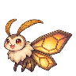

No.009
チラリ
灯 通常
灯籠のような羽を持つ夜の住人。花の蜜を小さな光に変える。
基本データ
| 図鑑番号 | No.009 |
|---|---|
| タイプ | 灯タイプ |
| 進化 | Lv.8でトモリガに進化 |
| 入手方法 | こもれび原（Lv.3〜5）、宵灯りの森（Lv.10〜13）、反響の石窟（Lv.10〜13）、灰花の庭（Lv.32〜36）の草むらに出現。 |
Lv.50の能力値
| HP | 271 | |
|---|---|---|
| 攻撃 | 164 | |
| 防御 | 110 | |
| 特攻 | 168 | |
| 特防 | 108 | |
| 素早さ | 114 | |
| 命中 | 104 | |
| 回避 | 102 |
冒険中の能力値はレベルに応じて上がります。オンライン対戦の通常レンタルはLv.50で統一されます。
覚える技
| 技 | タイプ | 分類 | 威力 | 命中 | PP | 効果 |
|---|---|---|---|---|---|---|
| 灯火のたね | 灯 | 物理 | 25 | 100 | 30 | 小さな灯を風に乗せる。 |
| 風のこだま | 風 | 物理 | 23 | 100 | 30 | 見えない風の波を送る。 |
| ぬくもり | 灯 | 回復 | — | — | 10 | 自分の最大体力の30%を回復。 PPを1消費する。 |
| 熾火の刻印 | 灯 | 物理 | 30 | 95 | 20 | ゆっくり燃える光が守りを貫く。 |
進化の系譜

タイプ相性
灯タイプの技は芽タイプに強く（1.5倍）、潮タイプの技を受けると効果が大きくなります。同じタイプの技を使うと威力が1.15倍になります。